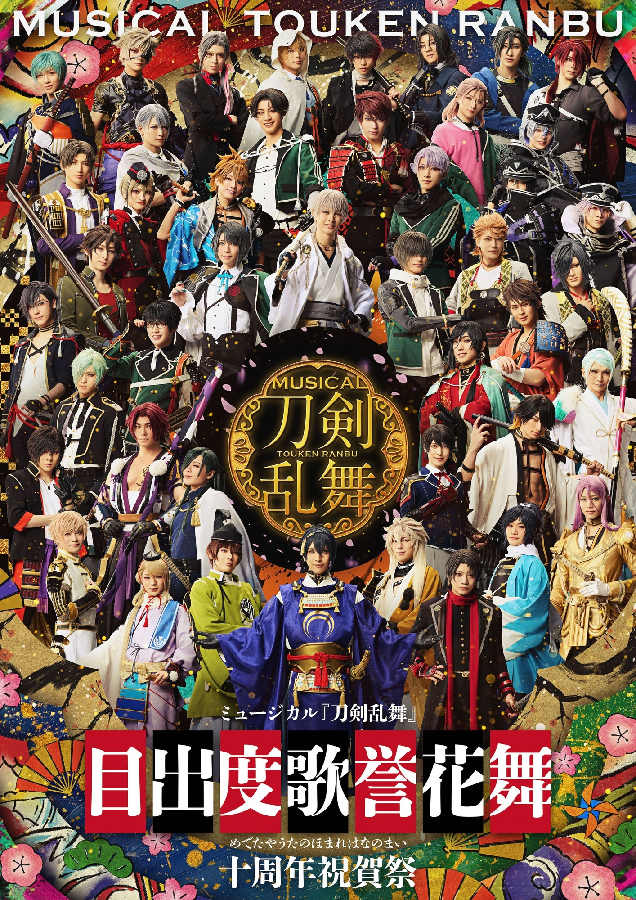

刀劍亂舞音樂劇
是由網頁遊戲《刀劍亂舞》延伸的2.5次元音樂劇， 每場公演分成兩部分，第一部為音樂劇（正劇）、第二部為LIVE演出， 簡稱為「刀音」（刀ミュ）。 除音樂劇公演外，每年年末另有大型LIVE公演等

我通常都聽時代少年團的音樂，因為我覺得他們的音樂風格我很喜歡，或是有時候他們開演唱會，但我通常都不會去線下看實際的(因為沒錢哈哈哈~)而且還要辦台胞證、搶票、訂飯店機票等，光是看到每次別人發到網路上的搶票過程，真的很難搶到。
他們的演唱會大概都開兩天，有時候第一天可以免費線上觀看，所以我的手機都安裝很多他們有帳號的APP，只為了看免費的演唱會(雖然可能有一、兩場會需要花一些錢錢)
我追的是中國的男團---時代少年團，大家最近上網應該都能看到有人在討論他們